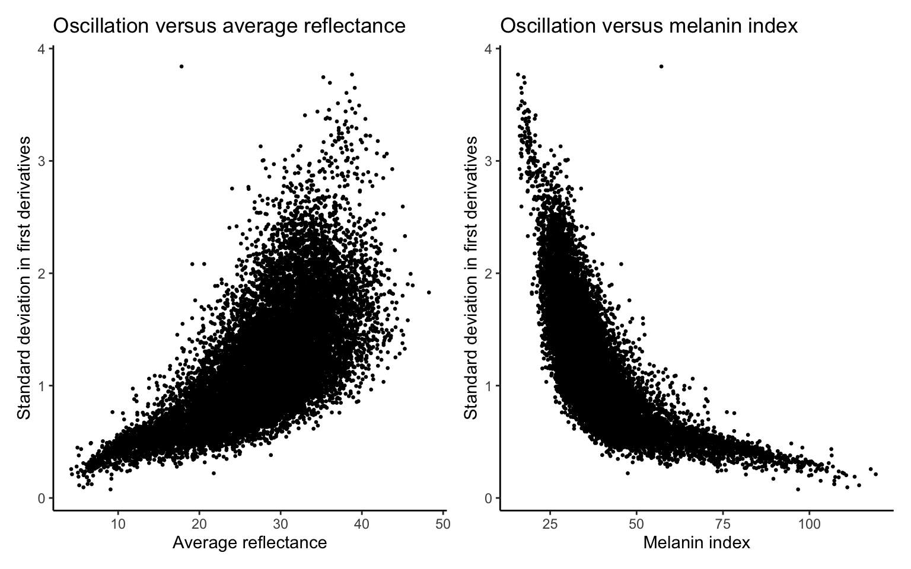

Shape analysis for ISSA
Junhui He
2025-09-17
Last updated: 2025-09-17
Checks: 7 0
Knit directory: SkinSpectrum/
This reproducible R Markdown analysis was created with workflowr (version 1.7.1). The Checks tab describes the reproducibility checks that were applied when the results were created. The Past versions tab lists the development history.
Great! Since the R Markdown file has been committed to the Git repository, you know the exact version of the code that produced these results.
Great job! The global environment was empty. Objects defined in the global environment can affect the analysis in your R Markdown file in unknown ways. For reproduciblity it’s best to always run the code in an empty environment.
The command set.seed(20250822) was run prior to running
the code in the R Markdown file. Setting a seed ensures that any results
that rely on randomness, e.g. subsampling or permutations, are
reproducible.
Great job! Recording the operating system, R version, and package versions is critical for reproducibility.
Nice! There were no cached chunks for this analysis, so you can be confident that you successfully produced the results during this run.
Great job! Using relative paths to the files within your workflowr project makes it easier to run your code on other machines.
Great! You are using Git for version control. Tracking code development and connecting the code version to the results is critical for reproducibility.
The results in this page were generated with repository version 284b3fc. See the Past versions tab to see a history of the changes made to the R Markdown and HTML files.
Note that you need to be careful to ensure that all relevant files for
the analysis have been committed to Git prior to generating the results
(you can use wflow_publish or
wflow_git_commit). workflowr only checks the R Markdown
file, but you know if there are other scripts or data files that it
depends on. Below is the status of the Git repository when the results
were generated:
Ignored files:
Ignored: .DS_Store
Ignored: .Rhistory
Ignored: .Rproj.user/
Note that any generated files, e.g. HTML, png, CSS, etc., are not included in this status report because it is ok for generated content to have uncommitted changes.
These are the previous versions of the repository in which changes were
made to the R Markdown (analysis/sliding-window.Rmd) and
HTML (docs/sliding-window.html) files. If you’ve configured
a remote Git repository (see ?wflow_git_remote), click on
the hyperlinks in the table below to view the files as they were in that
past version.
| File | Version | Author | Date | Message |
|---|---|---|---|---|
| Rmd | 284b3fc | Junhui He | 2025-09-17 | wflow_publish("analysis/sliding-window.Rmd") |
| Rmd | c49ab7d | Junhui He | 2025-09-17 | create sliding windows |
| html | c49ab7d | Junhui He | 2025-09-17 | create sliding windows |
1 Introduction to the ISSA Dataset
The International Skin Spectra Archive (ISSA) offers a detailed collection of spectral and colorimetric data for human skin, encompassing 15,256 records from 2,113 subjects. This data spans from 2012 to 2024 and originates from eleven datasets curated by international laboratories across eight countries: the UK, Spain, China, Japan, Pakistan, Thailand, Iraq, and Saudi Arabia. Each dataset follows a standardised measurement protocol to maintain data consistency.
In the ISSA dataset, individual records provide extensive details including record number, data origin, subject identification, and skin type—categorised by ethnicity, gender, age, and body location. The dataset also includes detailed information on the measurement instruments used, such as type, specular component inclusion, wavelength range and interval.
Alongside spectral data, each sample also contains CIE colorimetric data, including tristimulus values, xy chromaticity coordinates, CIELAB parameters, etc., based on the CIE 1931 standard colorimetric observer and the CIE standard illuminant D65.
1.1 Data Records
The datasheet arranges data across columns labelled A to BQ:
- A: Unique record identifier
- B: Data origin
- C: Subject number
- D to G: Ethnicity, gender, age group, and body location
- H to L: Instrument details including type and spectral measurement specifics
- N to BD: Spectral data from 360 nm to 780 nm
- BF to BQ: CIE colorimetric data
1.2 Skin Type
- Ethnicity: CA (Caucasian), CN (Chinese), SA (South Asian), AF (African), IQ (Iraqi), TH (Thai), JP (Japanese), AB (Arabian)
- Gender: F (Female), M (Male)
- Body Location: 1 (Back of Hand), 2 (Cheek), 3 (Cheek bone), 4 (Chin), 5 (Ear Lobe), 6 (Forehead), 7 (Inner arm), 8 (Neck), 9 (Nose tip), 10 (Outer arm), 11 (Palm), 12 (Ring finger)
1.3 Visualization
We visualize the skin reflectance curves across all ethnicity and body locations in the following figure:

| Version | Author | Date |
|---|---|---|
| c49ab7d | Junhui He | 2025-09-17 |
Furthermore, we visualize the skin reflectance curves per body location in the following figure:
| Version | Author | Date |
|---|---|---|
| c49ab7d | Junhui He | 2025-09-17 |
2 Derivative analysis
2.1 First derivative
We calculate the derivatives of the function to measure its growth rate. Since the skin reflectance is evaluated at a equally spaced wavelengths, i.e., \(\{300,310,\ldots,690,700\}\), we calculate the differences in function values to represent the derivatives.
| Version | Author | Date |
|---|---|---|
| c49ab7d | Junhui He | 2025-09-17 |
2.2 Variations in the first derivatives
We observe that higher curves tend to be more oscillatory, whereas lower curves appear flatter. To examine this pattern, we compute the standard deviation of the first derivatives as a measure of oscillation. The figures below show a clear positive relationship between the variation of the first derivatives and the average reflectance, or a negative relationship between the variation of the first derivatives and melanin index.

| Version | Author | Date |
|---|---|---|
| c49ab7d | Junhui He | 2025-09-17 |
3 Sliding window approaches
We use sliding windows to extract local features of the skin reflectance curves. Specifically, we consider a window size of 60 nm and slide the window from 400 nm to 700 nm with a step size of 30 nm. In each window, we calculate the average reflectance and slope. Therefore, we transform the original skin reflectance curves to 18-dimensional vectors.
3.1 Dimension reduction
We apply UMAP to reduce the dimension of the sliding window features from 18 to 2. The figure below shows the UMAP results colored by ethnicity and body locations, respectively. Based on the UMAP figure, it is difficult to distinguish the ethnicity and body locations through the sliding window features.
3.2 Gaussian mixture model
We fit a Gaussian mixture model (GMM) to the 18-dimensional sliding
window features using mclust. The number of components is
selected as 12. The figure below shows the UMAP results colored by GMM
clusters.
4 Next steps
We can train a deep learning–based classifier to decide whether a reflectance curve is realistic, using the sliding-window features as input. One approach is to employ a generative adversarial network (GAN), training the generator and discriminator together. After training, the discriminator can serve as a classifier, distinguishing realistic reflectance curves from unrealistic ones.
R version 4.3.1 (2023-06-16)
Platform: aarch64-apple-darwin20 (64-bit)
Running under: macOS 15.6.1
Matrix products: default
BLAS: /Library/Frameworks/R.framework/Versions/4.3-arm64/Resources/lib/libRblas.0.dylib
LAPACK: /Library/Frameworks/R.framework/Versions/4.3-arm64/Resources/lib/libRlapack.dylib; LAPACK version 3.11.0
locale:
[1] en_US.UTF-8/en_US.UTF-8/en_US.UTF-8/C/C/en_US.UTF-8
time zone: America/Detroit
tzcode source: internal
attached base packages:
[1] stats graphics grDevices utils datasets methods base
other attached packages:
[1] openxlsx_4.2.8 mclust_6.1.1 uwot_0.2.3 Matrix_1.5-4.1
[5] scales_1.4.0 lubridate_1.9.4 forcats_1.0.0 stringr_1.5.1
[9] dplyr_1.1.4 purrr_1.0.4 readr_2.1.5 tidyr_1.3.1
[13] tibble_3.2.1 ggplot2_3.5.2 tidyverse_2.0.0 patchwork_1.3.1
[17] knitr_1.50 workflowr_1.7.1
loaded via a namespace (and not attached):
[1] sass_0.4.10 generics_0.1.4 lattice_0.21-8 stringi_1.8.7
[5] hms_1.1.3 digest_0.6.37 magrittr_2.0.3 timechange_0.3.0
[9] evaluate_1.0.3 grid_4.3.1 RColorBrewer_1.1-3 fastmap_1.2.0
[13] rprojroot_2.0.4 jsonlite_2.0.0 zip_2.3.3 processx_3.8.6
[17] whisker_0.4.1 ps_1.9.1 promises_1.3.3 httr_1.4.7
[21] codetools_0.2-19 jquerylib_0.1.4 cli_3.6.5 rlang_1.1.6
[25] RcppAnnoy_0.0.22 withr_3.0.2 cachem_1.1.0 yaml_2.3.10
[29] tools_4.3.1 tzdb_0.5.0 httpuv_1.6.16 vctrs_0.6.5
[33] R6_2.6.1 lifecycle_1.0.4 git2r_0.36.2 fs_1.6.6
[37] irlba_2.3.5.1 pkgconfig_2.0.3 callr_3.7.6 pillar_1.10.2
[41] bslib_0.9.0 later_1.4.2 gtable_0.3.6 glue_1.8.0
[45] Rcpp_1.0.14 xfun_0.52 tidyselect_1.2.1 rstudioapi_0.17.1
[49] farver_2.1.2 htmltools_0.5.8.1 labeling_0.4.3 rmarkdown_2.29
[53] compiler_4.3.1 getPass_0.2-4